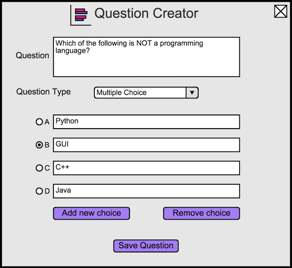
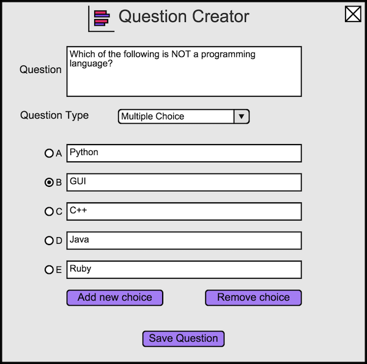

To create a multiple choice question, the instructor simply opens the question creator dialog, since it defaults to multiple choice questions. The instructor will see Figure 1.
The instructor can then enter possible answers in the input fields next to the letters 'A', 'B', and so on. By default the correct choice is letter 'A'. To make the correct answer a different letter, the instructor selects the circle next to the corresponding letter.
An example of a filled in question is shown in Figure 3.

Figure 3: A question about programming languages.
An example of an inserted choice is shown in Figure 4.

Figure 4: A question about programming languages with five choices.